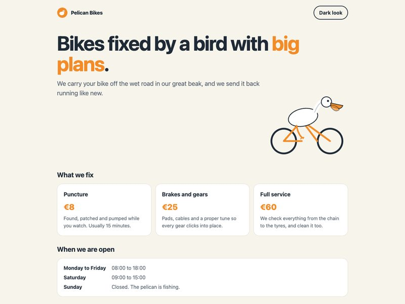
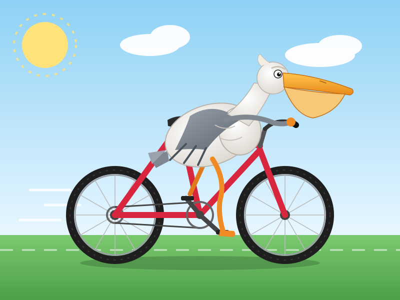
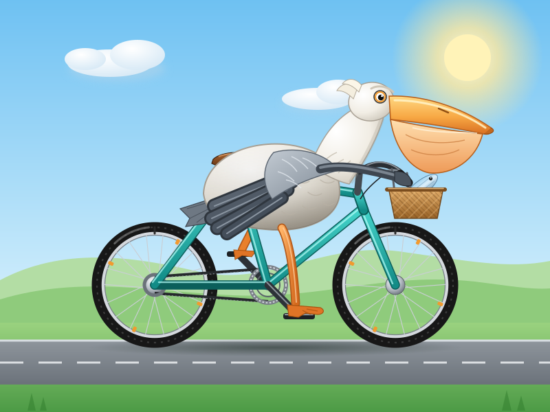
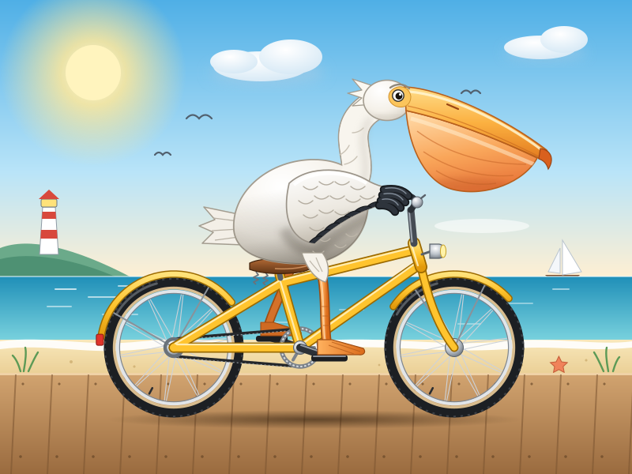
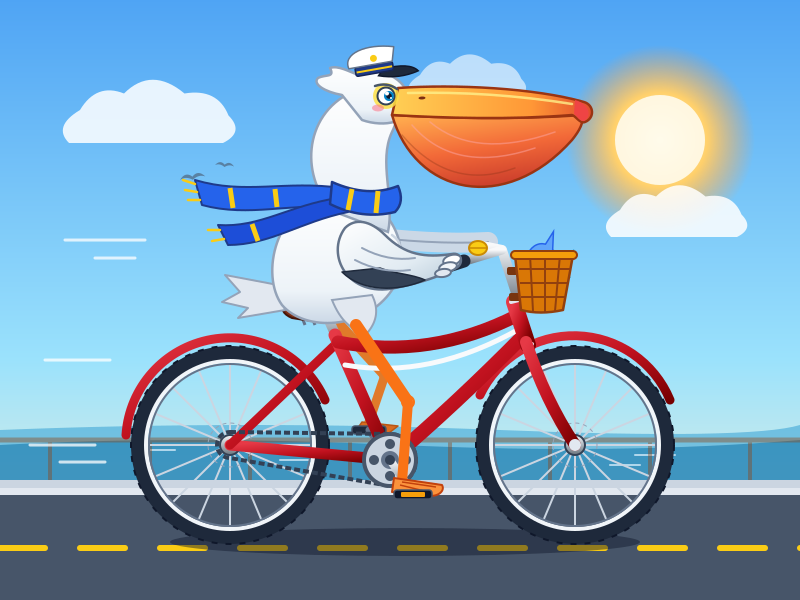
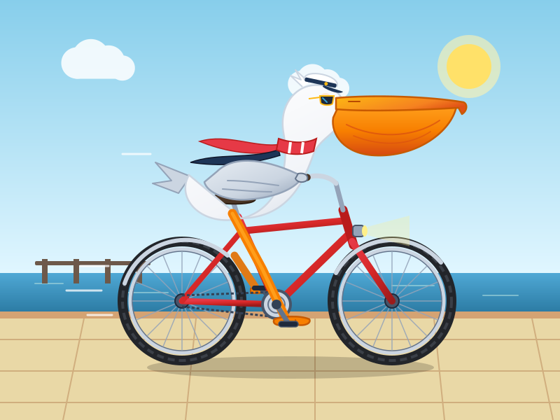
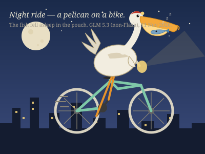
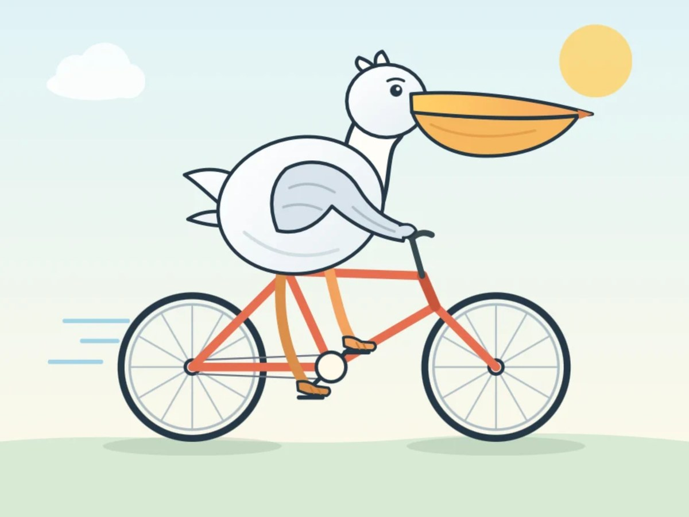
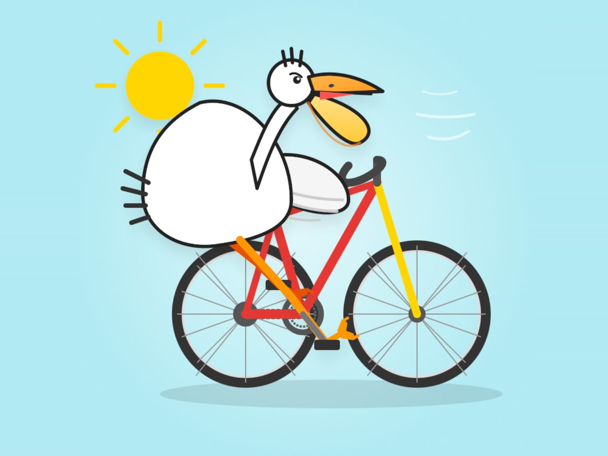
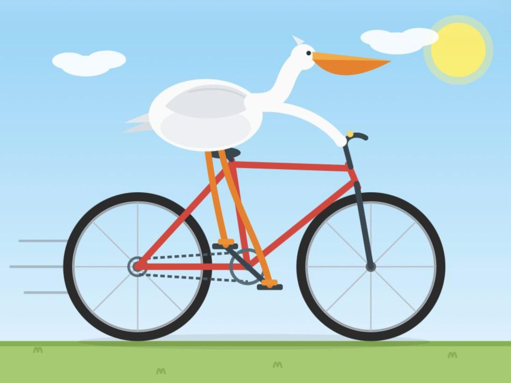

From the book Building with AI
The AI tests
The same prompt for every AI model, one go each, no follow-ups. These are the tests from Chapter 3 of my book. Everything here is the real answer each model gave, untouched, so you can judge for yourself.
The website test
Six models got exactly these words. Open each page and press its light and dark button.
Make a one-page website for a made-up bike repair shop run by a pelican, called "Pelican Bikes". Put everything in one file called index.html. No outside files, no libraries, no images from the internet. It needs: - a big title with a short slogan - three repair services with prices - the opening hours - a small pelican that you draw yourself, as part of the page - one thing that really works: a button that switches the whole page between a light look and a dark look It must look good on a phone and on a computer. Give me only the finished file.
What was checked
| Model | Opens with no errors | No outside files | Three prices | Opening hours | Pelican drawn in the page | Switch works | Fits a phone |
|---|---|---|---|---|---|---|---|
| Claude Haiku 5.5 | yes | yes | yes | yes | yes | yes | yes |
| Claude Sonnet 5.5 | yes | yes | yes | yes | yes | yes | yes |
| Claude Fable 5.2 | yes | yes | yes | yes | yes | yes | yes |
| Gemini Argon | yes | yes | yes | yes | yes | yes | yes |
| Gemini Hydrogen | yes | yes | yes | yes | yes | yes | yes |
| GLM 5.3 | yes | yes | yes | yes | yes | yes | yes |
A script opened every page in a real browser, at computer size and at phone size, on 15 November 2026. All six passed everything the prompt asked for. So the difference is not whether they work. It is how much each model made, and how it looks.
The pelican test
Nine models, one line: an SVG is a picture written as code, so this is a drawing test and a coding test at once. The last three are screenshots of what the model drew.
make a detailed svg of a pelican on a bike


Claude Haiku 5.5


Claude Sonnet 5.5


Claude Fable 5.2


Gemini Argon


Gemini Hydrogen


GLM 5.3


ChatGPT (GPT 6)


Qwen


DeepSeek
Not a perfectly fair race. The three Claude models worked inside my project. For the pelican they could look at their own picture and fix it before handing it over. All the others answered in a chat, in a single go. “Peter’s pick” is only my opinion, and Claude is also the AI I build with. Look, and decide for yourself.